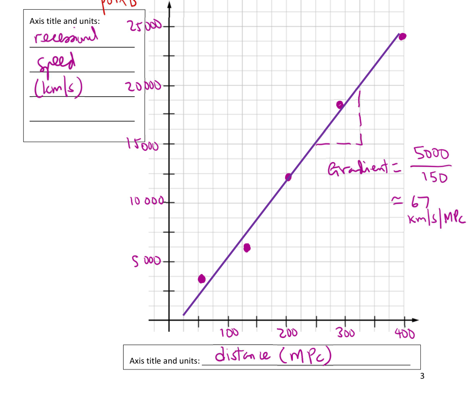
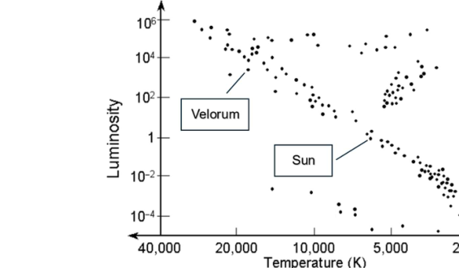

Part A: Multiple choice (10 marks)
The best direct evidence for the age of the universe according to the Big Bang theory is:
The HR diagram's "main sequence" of stars runs diagonally from top left to bottom right because:
What does observing galaxies with an increasing redshift with distance mean for our universe?
Which property primarily determines a star's path through the HR diagram and its eventual fate?
Which of the following correctly lists the objects in descending order of distance from the Sun?
Descending means furthest first. The first option has Uranus before Neptune, but Neptune is further out.
If Star X appears much brighter than Star Y to the naked eye, but both have the same absolute magnitude, which of the following can be correctly concluded?
"Appears brighter" means a brighter apparent magnitude. With equal absolute magnitudes, the one that looks brighter must be closer.
Which process prevents a main-sequence star from collapsing under gravity?
The expansion rate of the universe is currently determined by measuring:
The cosmic microwave background is important because it:
Which most strongly supports the view that the universe had a much hotter, denser early state?
Part B: Short answer (25 marks)
Question 1 (9 marks)
Curtis and Dominik are Year 10 students who took part in an astronomy project to collect and analyse data on distant galaxies. Their data are shown below.
| Galaxy | Distance (Mpc) | Recessional speed (km/s) |
|---|---|---|
| P | 55 | 3,309 |
| Q | 133 | 5,878 |
| R | 203 | 11,855 |
| S | 288 | 18,514 |
| T | 398 | 23,959 |
On graph paper:
- plot the data collected by Curtis and Dominik
- include a suitable scale on each axis
- include a suitable axis title and units on each axis
- draw a straight line of best fit.
Then compare your graph with the model answer.
- Points plotted correctly (3 marks; deduct 1 per mistake).
- Suitable scales on both axes (½ + ½ mark).
- Axis titles and units: recessional speed (km/s) on the vertical axis and distance (Mpc) on the horizontal axis (½ + ½ mark).
- A straight line of best fit, which must go through the data points (1 mark).

Use your line of best fit to estimate a value for Hubble's constant from the data, in km/s/Mpc.
Hubble's constant is the gradient of the line of best fit. For example, if the line passes through (100 Mpc, 5000 km/s) and (400 Mpc, 24 000 km/s), the gradient = (24 000 − 5000) ÷ (400 − 100) ≈ 63 km/s/Mpc.
- 1 mark for correctly using the line of best fit (not data points that are off the line).
- 1 mark for a value between 55 and 70.
- 1 mark for correct units: km/s/Mpc.
Question 2 (6 marks)
Alexis and Ryan are observing stars using the school's telescope. They observed two stars:
- Star A: apparent magnitude +1.0, absolute magnitude 0.0
- Star B: apparent magnitude +3.0, absolute magnitude −2.0
Which of the two stars is more luminous? Justify your choice.
Star B (1 mark). Its absolute magnitude is brighter: a lower number (−2.0 compared with 0.0) (1 mark).
Which of the two stars is closer to the Earth? Explain how you reached your decision, referring to the magnitudes of the stars.
Star A (1 mark). It is brighter when viewed from Earth (apparent magnitude +1.0 compared with +3.0), even though it is actually dimmer than B (absolute magnitude 0.0 compared with −2.0) (1 mark).
Explain how the initial mass of a star determines its absolute magnitude.
Mass determines the temperature and size of the star at its birth (1 mark). Temperature and size determine its absolute magnitude (1 mark): as the mass increases, the temperature and diameter increase, so the star is more luminous.
Question 3 (6 marks)
The Sun and Velorum are two stars on the main sequence of the HR diagram. Their positions on the HR diagram are shown below. The mass of Velorum is about 10 solar masses (10 MSun).

Compare the colour and relative size of the Sun and Velorum.
Colour of the Sun:
Colour of Velorum:
Which has a larger radius?
½ mark for each colour and 1 mark for the larger radius.
State similarities and differences in the life cycles of the Sun and Velorum, considering their evolution, final stages, and the processes leading to their final end points.
Similarities (any two points, 2 marks): both start as protostars, spend most of their lives on the main sequence fusing hydrogen, and swell up into giants.
Differences (2 marks):
- The Sun becomes a planetary nebula and leaves behind a white dwarf (1 mark).
- Velorum explodes as a supernova and leaves behind a neutron star (1 mark).
Question 4 (4 marks)
Spectroscopy is a very important observational technique in astronomy. Light from a distant star is dispersed using a spectroscope, and the spectral lines (an example is given below) are analysed to find which elements are present in the star or in the atmosphere of an exoplanet orbiting it.
Explain how it is possible to determine the elements present in the star or an exoplanet just by observing the spectral lines.
The spectral lines are unique to each element (1 mark). The lines are observed in laboratories for known elements, and when they match those observed in the starlight, the star must contain those elements (1 mark).
Astronomers can also tell whether a star is travelling towards or away from us from its spectral lines. Describe the changes to the spectral lines that let us determine this.
The Doppler effect changes the wavelengths of the waves from the source (1 mark):
- the lines are red shifted (to longer wavelengths) if the source is moving away from the observer;
- the lines are blue shifted (to shorter wavelengths) if the source is moving towards the observer (1 mark).